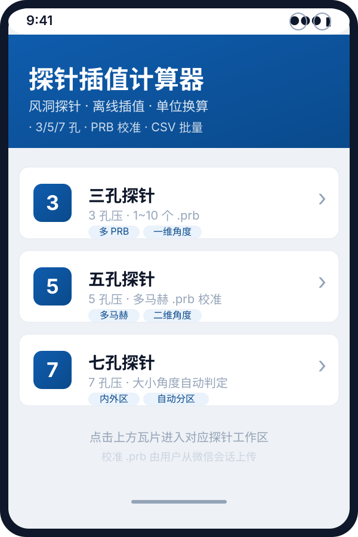
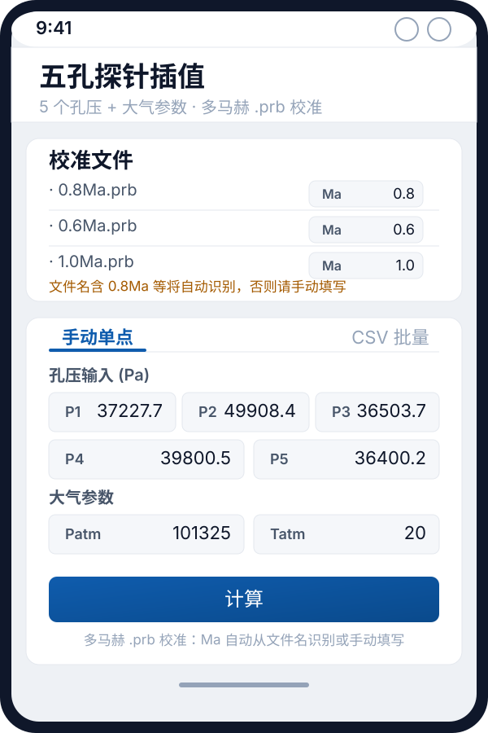
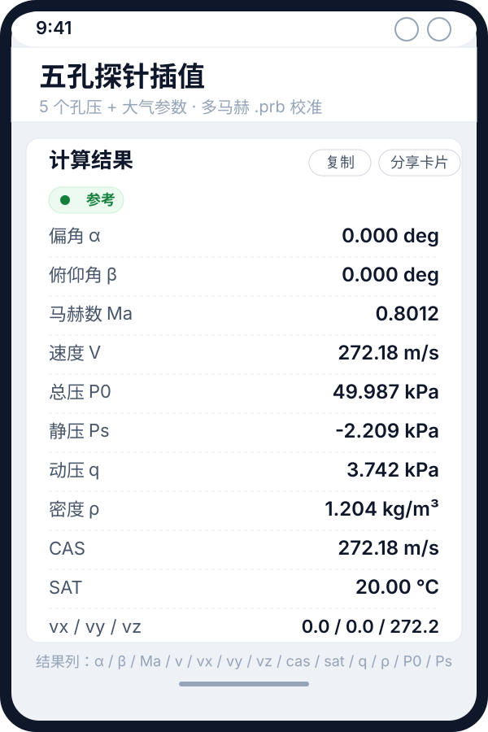
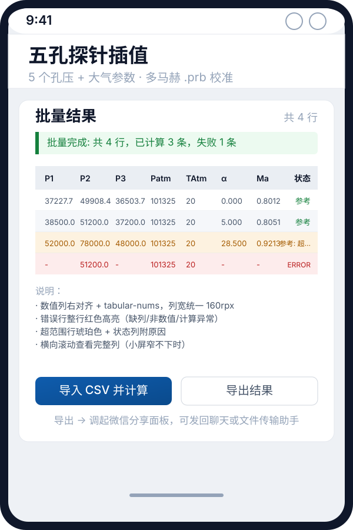

五孔探针插值 · 使用说明
5 个孔压 + 大气参数 · 多马赫 .prb 校准 · 二维角度求解
1. 概述
五孔探针插值用于风洞试验中二维角度（偏角 α + 俯仰角 β）的求解。基于 PRB 9 区域法对孔压比进行插值，输出 13 项气动参数。
- 校准数据：多份
.prb文件，每份对应一个马赫数档（如 0.6 / 0.8 / 1.0 Ma）。 - 马赫识别：自动从文件名（含
0.8Ma等字样）解析；识别不到时由用户在文件列表中手动填写。 - 输入：5 个孔压 P1~P5（Pa，表压）+ 大气压 Patm + 大气温度 Tatm（℃）。
- 输出：α、β、Ma、V、vx/vy/vz、CAS、SAT、动压 q、密度 ρ、总压 P0、静压 Ps（共 13 项）。
- 数值校验：JS 端口与 Go 原版逐位一致（125 用例全 PASS）。
probe-interpolator 共享同一套 Go 算法核心，结果数值完全一致。2. 首页入口
打开小程序后，首页（探针选择页）会列出三种探针瓦片。点击「五孔探针」进入工作区。

3. 校准文件加载
五孔探针需加载至少一份 .prb 才能计算。建议加载多份不同马赫档，以保证插值在跨马赫时仍可信。
3.1 操作步骤
- 把
.prb发到微信聊天或「文件传输助手」。 - 在小程序「校准文件」卡片点「选择 .prb」按钮。
- 从微信会话文件列表中选择一个或多个
.prb，加载完成后会显示文件名与马赫输入框。 - 检查马赫数：若文件名含
0.8Ma等字样会自动识别，否则在右侧Ma输入框手动填写。
.prb 都必须关联一个马赫数，否则跨马赫插值无法工作。文件名能识别时自动填充，无法识别时由用户手动输入。
4. 手动单点输入
在「手动单点」Tab 中输入 5 个孔压与大气参数，点「计算」按钮。

4.1 输入字段
| 字段 | 含义 | 单位 | 缺省值 | 必填 |
|---|---|---|---|---|
P1 | 第 1 孔压力 | Pa（表压） | — | 是 |
P2 | 第 2 孔压力 | Pa（表压） | — | 是 |
P3 | 第 3 孔压力 | Pa（表压） | — | 是 |
P4 | 第 4 孔压力 | Pa（表压） | — | 是 |
P5 | 第 5 孔压力（中心孔，总压方向） | Pa（表压） | — | 是 |
Patm | 大气压 | Pa | 101325 | 是 |
Tatm | 大气温度 | ℃ | 20 | 是 |
5. 单点计算结果
点「计算」后，结果卡片显示在页面下方。卡片顶部有状态胶囊，下方是 13 项结果行。

5.1 输出字段
| 字段 | 含义 | 默认单位 | 可切换单位 |
|---|---|---|---|
alpha | 偏角 α | deg | rad |
beta | 俯仰角 β | deg | rad |
machNumber | 马赫数 | — | — |
v | 速度 V | m/s | km/h |
vx / vy / vz | 速度三分量 | m/s | km/h |
cas | 校正空速 | m/s | km/h |
sat | 静温 | ℃ | K / °F |
dynamicPressure | 动压 q | Pa | kPa / MPa |
density | 密度 ρ | kg/m³ | — |
P0 | 总压 | Pa | kPa / MPa |
Ps | 静压 | Pa | kPa / MPa |
5.2 结果卡片操作
- 复制：把当前结果（按显示单位）整理为制表符分隔文本写入剪贴板。
- 分享卡片：把当前结果绘制成一张图片，调起「分享到会话」/「保存相册」/「预览」三级回退。
6. CSV 批量导入/导出
切到「CSV 批量」Tab，可一次性灌入多组孔压，结果回写为 CSV。

6.1 导入（计算）
- 点「导入 CSV 并计算」，从微信会话选
.csv。 - 必需列：
P1, P2, P3, P4, P5（单位 Pa）。 - 可选列：
Patm/TAtm（缺省回退到页面当前大气输入）。 - 表头容错：支持
P1 (Pa)、大气压、气温(℃)、Patm、TAtm等写法。 - 解析按 RFC4180 风格：支持引号、
""转义、引号内逗号/换行、UTF-8 BOM 剥离。
6.2 输出列
表头固定为：P1..P5, Patm, TAtm, alpha, beta, machNumber, v, vx, vy, vz, cas, sat, dynamicPressure, density, P0, Ps, isValid, warning
isValid = 1/0：1 表示有效；0 表示超范围（仍输出参考值）。- 解析或计算失败的行：
isValid = ERROR，warning列写明原因。
6.3 导出（分享）
点「导出结果」按钮，把全部结果行写成 probe_batch_five_<时间戳>.csv。
- 优先调起
wx.shareFileMessage分享到会话。 - PC 端不可用时回退到
wx.saveFileToDisk存盘。 - 用户取消分享面板时显示中性提示「已取消分享，未导出」。
utils/csv-batch.js 中与 wx 解耦，可在 Node 端用 verify/verify_csv.js 直接校验。7. 单位切换
工作区顶部「显示单位」卡片可分别切换四类单位，只作用于结果展示与 CSV 导出结果列，输入固定国际单位。
| 类型 | 可切换单位 | 影响范围 |
|---|---|---|
| 压力 | Pa / kPa / MPa | P0、Ps、动压 q |
| 角度 | deg / rad | α、β |
| 温度 | ℃ / K / °F | SAT |
| 速度 | m/s / km/h | V、CAS、vx/vy/vz |
- 切换后 CSV 表头结果列自动加单位后缀，例如
P0_kPa、v_km_h、sat_degC。 - 单位偏好存入
app.js的globalData.units，跨三/五/七孔页面共享。
9. 结果状态语义
结果卡片顶部的状态胶囊有三档：
| 状态 | 颜色 | 含义 |
|---|---|---|
| 参考 | 绿色 | 已计算且在校准范围内 |
| 参考: 原因 | 琥珀色 | 超出校准范围，结果仅供参考（CSV 同步输出「参考: 原因」） |
| 计算失败: 原因 | 红色 | 输入非法或无法收敛，结果值显示为「-」 |
10. 常见问题
Q1：为什么 PC 微信打不开文件选择器？
PC 微信的 wx.chooseMessageFile 兼容性较差，建议用手机微信扫码预览小程序。
Q2：文件名不带马赫数怎么办？
在文件列表右侧的 Ma 输入框手动填写马赫数即可。每份 .prb 都必须关联一个马赫数。
Q3：导出 CSV 时点了「取消分享」没生成文件？
取消分享面板会显示「已取消分享，未导出」，结果数据仍保留在小程序内存中，可重新点「导出结果」再次调起分享面板。
Q4：结果状态显示「参考: 超范围」是什么意思？
输入的孔压组合对应的 α/β 角度超出了 .prb 校准网格覆盖范围，或当前马赫数不在已加载 .prb 的马赫区间内。结果仅供参考，CSV 同步输出「参考: 原因」并附诊断数值。
Q5：五孔结果中的 vx/vy/vz 是什么坐标系？
vx/vy/vz 是体轴系下的速度三分量：vx 沿探针轴向，vy/vz 垂直探针轴。具体定义参见桌面端 shared/algorithms/go/fivehole/interpolation 文档。